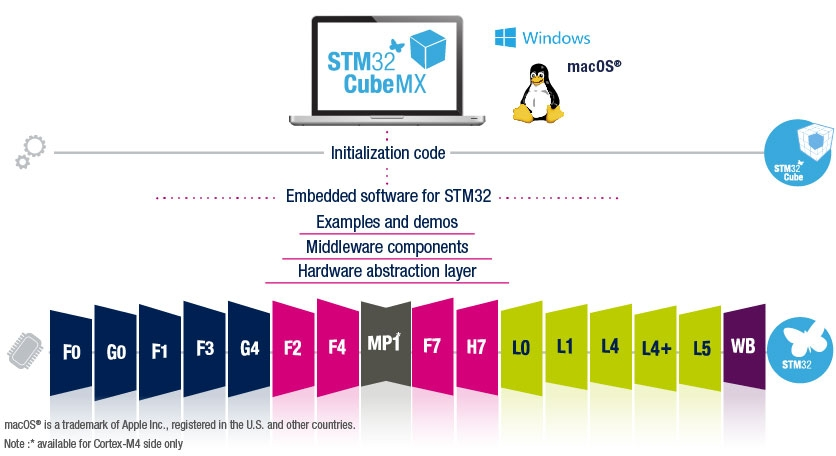
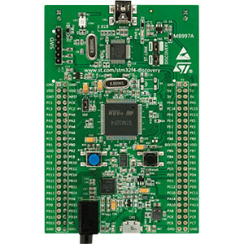

On the bench is an STM32F4 Discovery board, a small I²S DAC and a tangle of jumper wires. Nothing is playing yet. The first milestone was simply getting the board to blink.
Second step
Once that blinking light works — and maybe you have done something with on-board sensors or an external control — you will have stumbled across the 'library' thing.
At this point I still do not understand the engineering philosophy behind the library concept: not structured, not documented, no rules, not standardized. It is a big cause of bugs and conceptual problems — and not only ones you cause yourself.


Still, you will need them: standing on the shoulders of others. This alone took a month of trial and error to get a working configuration. As I use STM32 microcontrollers, I use the HAL (hardware abstraction layer) libraries provided by ST. More specifically, the ones generated by CubeMX.
The next step is to get fluent in using CubeMX to generate the project's base code, then open or import that project in KEIL MDK to add your own code. Maybe learn the built-in debugging tools as well. They will not help you much with audio processing, so don't waste too much time there.
Third step


Be brave and connect your first audio DAC board to the MCU board. Maybe you already have a DAC on your discovery board, as with an STM32F4DISC.
Now start to understand what is needed to stream I²S data to your DAC. Dig through the datasheets to learn the several I²S protocols and how to configure both DAC and MCU. Don't despair: familiarise yourself with the keywords and trust the work others have done, at least at first. Apart from the protocols (use Philips!), the most important concept is clock signals. To make things more confusing, different names are used:

MCK = CK = master clock
WS = LRCK = word select or LR clock
BCK = SCK = bit clock or serial clock
As audio freaks we understand sample frequency and bit depth, and how they work out on the different clocks, don't we? Now generate a sine wave in code, or use a table, and see if you get a peep without cracks or distortion. If you do, consider yourself lucky and talented. If not, learn more about data formats. There are also some good YouTube videos by Mute if you get stuck.
Remember: this is bare-metal coding, so you have to control everything. Another month of struggling: I²S audio data is a signed integer between -1 and 1 (times bit depth -1), aka two's complement. You have to control the data format all the time, casting things like:
txBuf = (uint16_t)data_out // filling send buffer with 'typecasted' correct dataAnd be aware of overflow. You can't just multiply or divide your data. These help:
data_out >> 1 // data halved, i.e. 6 dB down in volumeAnd hey, here's interesting stuff: ever participated in the floating point versus fixed point debate of audio processing? Hmmm.